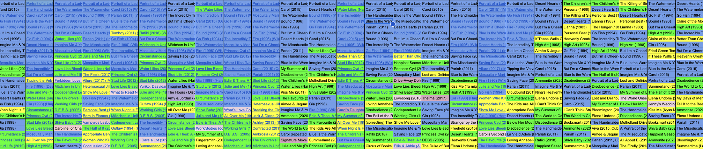

Making a List of 50 Lesbian Film Titles
How ChatGPT assembles a canon
I began by asking ChatGPT-5 to create a list of 50 Lesbian films. I did not provide an additional qualifier, like most popular, highest grossing, or the like, because I wanted to see how the model would fill what the prompt refused to provide. To get a sense of the algorithmic patterns that determine the response, I asked 25 times in separate chats with the memory function disabled. This means I ended up with 25 lists of 50 film titles.
25 Lists of 50 Lesbian Films Analyzed
In 20 of the 25 requests, the model produced a list of 50 titles without any additional context (other than a brief introductory and concluding phrase).
Five times (within) 25 inquiries, the model produced a list organized into sub-genres like Classics & Early Representations, Romance & Coming of Age, Indie & International Dramas & Psychological Stories, Indie, Art-House, & Experimental Comedy, Indie & Cult Favorites, and once a Documentary section, which resulted in a more diverse list of films overall.
In most lists, though not consistently, ChatGPT provided links to references. Individual titles hyperlinked to a source or the source was listed and linked in parentheses (e.g., an entry might look like this: Mosquita y Mari (2012) (Harper's BAZAAR))
Looking at the references, specific sources, expected and unexpected alike, popped up throughout the corpus. An account of the most frequently used words in the corpus also points to the most-referenced source materials. As per Voyant, the most frequently appearing words in the corpus of film lists are as follows:
wikipedia (111); reddit (94); lesbian (86); harper's (83); bazaar (83)
While Wikipedia's and Reddit's presence as source listings are less surprising, the frequency of Harper's Bazaar is unexpected. After inspecting the source, one possible explanation emerges: In April of 2025, Harper's Bazaar published an article named "50 of the Best Lesbian Films of all Time." Crucially, a majority of the words in my prompt are contained in the article's title, including the number 50. This is one possible reason why HB is disproportionately represented in the collected source listings. Research on hiring algorithms (Schellmann, 2025) shows that, left to their own devices, algorithms evaluate data points based on frequency in training data rather than salience. This is why a hiring algorithm, for example, might conclude that the name "Tom" is a good indicator of future job performance (Schellman) and also why algorithms tasked with producing a list of 50 Lesbian Films might think the number of films is just as important as the content.
Were I to create a list on my own, I would privilege specifically queer publications and rely on (some of) them to provide more nuanced distinctions between films and evaluation metrics (i.e., not necessarily metrics like most popular or most profitable) and a sense of which sub-genre a film belongs to. Of course, I might also ask the model to privilege my preferred sources, but my intent was to get an understanding of how ChatGPT assembles its outputs and, therefore, its expertise.
The model did find its way to some perhaps more queer/lesbian-specific publications: "Lesbian (86)" refers to the word "lesbian" in several different contexts and also points to a few unspecified sources via appended annotations like "(often included in lesbian / queer film lists) (Saint Paul Public Library)." The Saint Paul Public Library, by the way, is referenced 9 times throughout the corpus. Overall, Wikipedia is the only source with over 100 mentions, Reddit receives 94 mentions, IMDb receives 70, and, among the other explicitly queer publications, Autostraddle serves as a reference 23 times, Out Magazine 13 times.
Frequency Distribution
With source distribution in mind, we can now look at the frequency of individual titles in the corpus.
This image shows the frequency distribution within the first 25 films in the 25 lists ChatGPT-5 created.
Blue fields contain film titles that appeared more than 20 times in the corpus of 25 top 50 lists. (Some of them appeared over 25 times, indicating repetitions within the same list.) This list includes 17 films that build the basis for the in-depth analysis to come. Green fields signify films that appeared between 10 and 19 times in the collection. Yellow fields indicate films with 2-9 mentions in the overall corpus, and pink tones indicate titles with only a single mention in the corpus.
We can also notice that the final 5 columns in the data set – the 5 lists that featured a genre-based division – expanded on the patterns of the previous lists a bit, though the most frequently mentioned films remain well-represented.
Repetitions and the Top 17
A closer look at the most often mentioned films below indicates another quirk: Repetitions within a single list do occur. The 4 most represented films occur more than 25 times in 25 lists:
Portrait of a Lady on Fire: 31
Carol: 28
Blue is the Warmest Color: 27
Bound: 26
Sometimes the model will list a repetition and mark it as such, then offer an alternative, effectively giving a repetition + an alternative. E.g., "Gia (1998) — okay, I realize I already listed that; replace duplicate with Rafiki (2018)" In these cases, I counted both films listed.
Additional details further define the 17 most mentioned films:
By decade: 1 from the 1980s, 6 from the 1990s, 2 from the 2000s, 7 from the 2010s, and none after 2019.
By country: 10 from (or primarily from) the USA, 2 from France, 3 from the UK, 1 from South Korea, and 1 from India.
While the set of 17 films shows some variety — in addition to the international titles, the US titles include at least 4 films with POC protagonists — it is surprising that no films after 2019 made the cut and that a majority of titles are allocated to the 1990s and the 2010s. To what extent this reflects larger cultural dynamics in these decades rather than ChatGPT-5's algorithmic peculiarity, remains to be discussed.
Using this set of 17 most frequently mentioned films, I assembled data sets for each film, composed of existing IMDB data and Gen-AI-generated related data. (See details in the Data Overview section.)